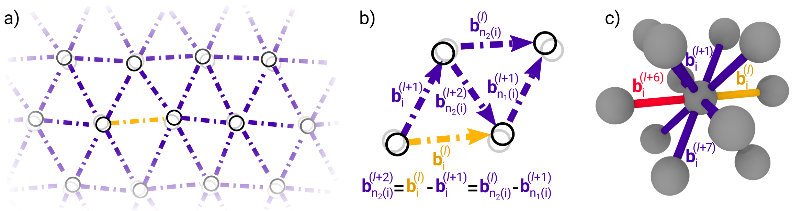

|
18-: CNRS researcher, CINaM 17-18: Postdoc, T-1, LANL 15-17: EuroFusion fellow, CCFE 11-15: PhD, Imperial College London Curriculum Vitae |
The design of more durable materials is key to reduce the carbon emissions of construction, transportation and energy production. To achieve this requires an understanding of mechanical strength and toughness at the level of jiggling atoms.
We design theoretical and numerical tools to discover the atomic mechanisms by which solid materials bend and break. As the range of possibilities is practically infinite, the challenge is to find the most influential, then characterize these accurately. A particular focus is designing autonomous methods that harness massively parallel computers to rapidly search configurational space. This requires the development of statistical uncertainty measures, coarse-grained modelling tools and data-efficient machine learning approaches.
A better idea of our research interests can be found in our publications and open source software.News
Recent Publications
† = corresponding author(s)Software
- PAFI- Projected Average Force Integrator
- Anharmonic free energy barrier evaluations using in LAMMPS/MPI/C++
Physical Review Letters 2018

- TAMMBER- Temperature Accelerated Markov Models with Bayesian Estimation of Rates
- Branch of ParSplice code for massively parallel rate matrix contruction
Physical Review Materials 2018

- PyGT- Graph Transformation in Python
- Stable analysis of metastable Markov chains
J Chem. Th. Comp. 2020

- BLaSa- Bond Lattice Sampling and Analytics
- Execution and analysis of bond lattice dynamics Physical Review B Rapid Communications 2020 
Team
- 2020-23: Petr Grigorev
Postdoc, UQ-aware exploration of material defects. Funded by ANR MEMOPAS (PI: TDS).
- 2018-22: Clovis Lapointe (Joint Supervision, CEA Saclay)
PhD Student, machine learning of point defects (with Dr Cosmin Marinica)
- 2018-22: Raynol Dsouza (External Supervision, MPIE Dusseldorf)
PhD Student, mean field models for lattice vibrations (with Prof. Joerg Neugebauer)
- 2020-21: Deepti Kannan (External Supervision, University of Cambridge)
MSc Student / Marshall Scholar, coarse graining of Markov Models (with Prof. David Wales)
---- Past Members -----
now MSc Student / Marshall Scholar, Imperial College London
Funding
- ANR MeMoPas (2020-2022)
PI on ANR JCJC project, Mesoscale models from massively parallel atomistic simulations: uncertainty driven, self-optimizing strategies for hard materials
- EuroFusion / IREMEV program
Computational resources (2020-2021) for studies of timescale estimation of microstructural evolution
- GENCI / IDRIS national supercomputing centers
Computational resources (2019-2020,2020-2021) for high-throughput studies of defect diffusion mechanisms

Job Openings
Some Presentations
- Kink limited motion of line defects: multiscale simulation and analysis
- Applied analysis seminar, Imperial College London, February 2019 (Invited) Slides
- Kink limited Orowan strengthening and the brittle to ductile transition of bcc metals
- Oxford MFFP Meeting, September 2018 (Invited) Slides
- Uncertainty-driven construction of Markov models from accelerated molecular dynamics
- Advances in Computational Statistical Physics, CIRM, France, September 2018 (Invited) Slides
- Fast, vacancy-free climb of dislocation loops in bcc metals
- NUMAT conference, Montpellier, France, 2016 Slides
- Multiscale analysis of nonlinear dislocation models
- MMM conference, Berkeley, USA, 2014 Slides